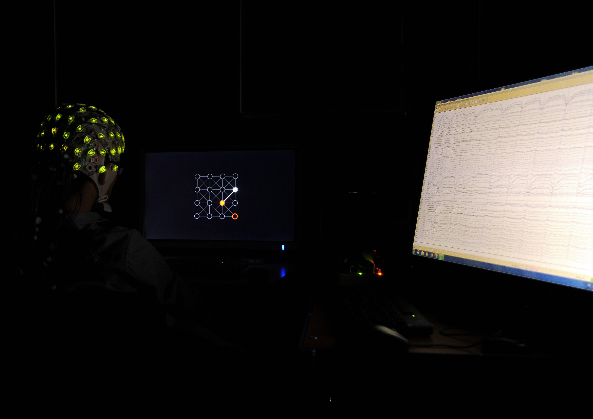

The Convergence of Artificial Intelligence and Brain-Computer Interfaces
Artificial Intelligence (AI) and Brain-Computer Interfaces (BCIs) represent two important developments in modern technology, with the potential to transform the relationship between humans and machines. AI enables computers to analyse information, recognise patterns and perform tasks that normally require human intelligence, while BCI technology creates a direct communication pathway between the human brain and external devices.
By combining these technologies, researchers can use AI algorithms to interpret electrical signals generated by brain activity and translate them into digital commands. This allows individuals to interact with computers and machines without relying on traditional physical interfaces such as keyboards, touchscreens or voice commands.
The integration of AI and BCI could therefore represent a major step towards more direct and natural human-machine communication, bringing neuroscience, computer science and semiconductor technology closer together.
Transforming Human Capabilities and Communication
One of the most promising applications of AI-powered BCI technology is in medicine and rehabilitation. People affected by paralysis, spinal cord injuries or neurological disorders could potentially regain the ability to communicate, operate computers and control robotic prosthetic limbs through brain signals.
AI plays a fundamental role by analysing complex neural activity, identifying meaningful patterns and translating them into commands that external devices can understand. Neuroprosthetics, for example, aim to restore or replace certain lost sensory and motor functions through artificial devices connected to the nervous system.
Beyond medical applications, future developments could allow people to interact with digital environments and intelligent machines through increasingly sophisticated neural interfaces. Although many possibilities remain experimental, the combination of AI and BCI offers significant potential for changing communication, healthcare and human capabilities

Ethical Challenges and the Future of Human Intelligence
Despite its enormous potential, the convergence of AI and BCI raises important ethical, social and philosophical questions. The possibility of recording and interpreting brain activity introduces concerns about mental privacy, personal data protection, cybersecurity and individual autonomy.
Another important question concerns the boundaries between biological and artificial intelligence. If future technologies allow increasingly direct communication between the human brain and intelligent computer systems, society will need to consider how these developments could affect human identity, independence and equality.
It will therefore be essential to establish appropriate ethical principles and safeguards to ensure that these technologies are developed responsibly. The objective should be to enhance human capabilities while preserving individual freedom, dignity and control over personal information.
Conclusion
The convergence of artificial intelligence and brain-computer interfaces could mark the beginning of a new era in human-machine interaction. By establishing a direct connection between biological intelligence and intelligent machines, these technologies may transform medicine, communication and our understanding of human capabilities.
Although significant scientific and ethical challenges remain, the potential applications are extraordinary. Ultimately, the goal should not be to replace human intelligence with artificial intelligence, but to create a complementary relationship in which technology expands our natural abilities and improves quality of life.
The future of human-machine interaction may lie in the possibility of connecting the human mind with artificial intelligence, bringing technology closer than ever to the biological foundations of human thought.
Sources (APA Style)
- Wikipedia contributors. (n.d.-a). Artificial intelligence. Wikipedia. Retrieved November 16, 2026, from https://en.wikipedia.org/wiki/Artificial_intelligence
- Wikipedia contributors. (n.d.-b). Brain–computer interface. Wikipedia. Retrieved November 16, 2026, from https://en.wikipedia.org/wiki/Brain%E2%80%93computer_interface
- Wikipedia contributors. (n.d.-c). Neuroprosthetics. Wikipedia. Retrieved November 16, 2026, from https://en.wikipedia.org/wiki/Brain_implant